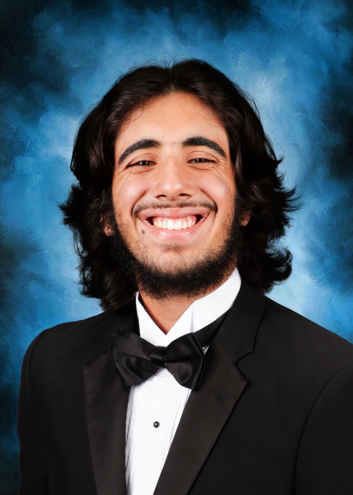
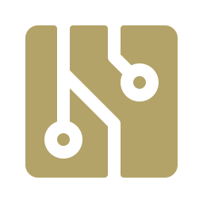
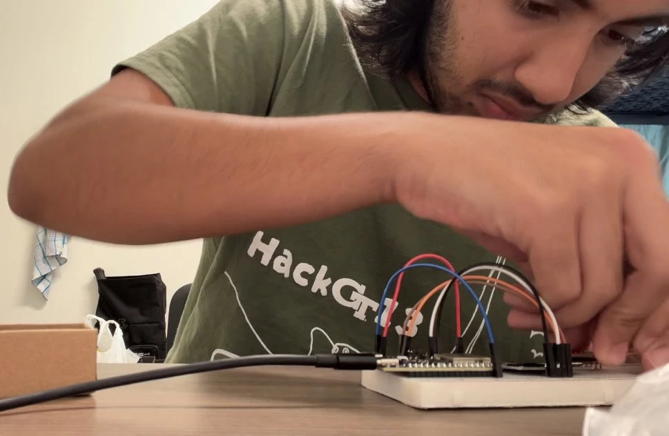
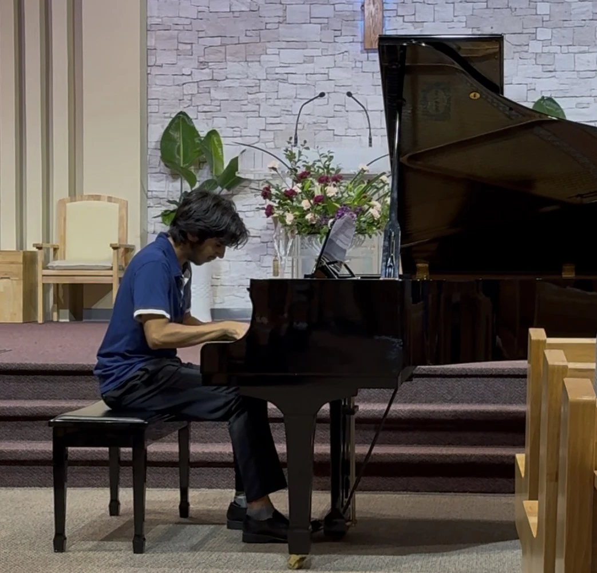
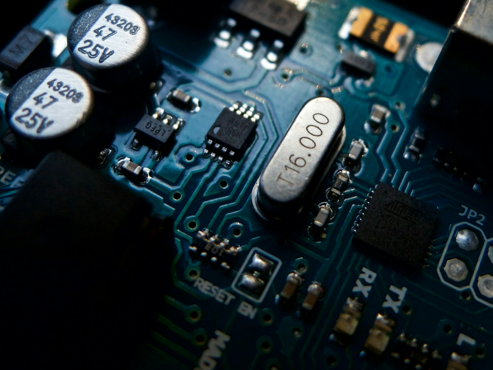

Georgia Institute of Technology
Bachelor of Science in Computer Engineering · GPA 4.00
Aug 2026 – Present
Expected May 2029
Computer Engineering Portfolio
I'm a first-year computer engineering student at Georgia Tech who loves working with computers to build solutions to real-world problems. I plan to concentrate on embedded systems and emerging architectures during my education. Additionally, I plan to pursue a minor in philosophy, which will help me explore the ethics behind engineering and AI.


My passion for computer engineering started in middle school, when I took my first computer science classes. I was thrilled with the idea of being able to build a whole world with just a keyboard, and I started exploring web development and video game design in high school. As time went on, I began getting exposure to hardware as well, whether it be from my mom's work as an electrical engineer or from helping my dad build my first computer. All of these experiences are what made me want to pursue computer engineering, which I am proud to be studying at Georgia Tech.
Some of my other interests include piano and math. I have played classical piano for over 14 years, and I worked as a math tutor at Mathnasium for a little over 2 years. Both of these things have taught me valuable skills that I can also apply to my work as an engineer, such as patience and performing well under pressure.


Bachelor of Science in Computer Engineering · GPA 4.00
Aug 2026 – Present
Expected May 2029
Math Instructor · Lawrenceville, GA
Aug 2024 – Aug 2026
Mathnasium is a learning center for students K-12 to strengthen their math skills and build confidence via one-on-one and small group tutoring sessions.
Software Developer · C#, WPF, Python
Sep 2026
ScamShield is a live scam call detection tool that records phone calls in real time, transcribes audio via AssemblyAI, and analyzes the likelihood of the call being a scam as well as if the call is AI generated. Results are then sent to a web dashboard. Built in a team of four for HackGT 13.
Game Developer · Unity, C#
Fall 2024 – Spring 2025
Eco-Anxiety is a first-person horror game where players must collect litter in a dark forest before a monster catches them. Developed in a team of four for the Games for Change 2024–2025 Student Challenge.
Officer
Aug 2024 – May 2026
Vice-President
Aug 2024 – May 2025

ScamShield is an app that detects scam calls in real time. The program automatically detects when you accept a call from an unknown caller and starts recording. It then transcribes and analyzes the call audio in 20-second chunks, checking for signs that the call may be a scam, such as common speech patterns of scammers or an AI-generated voice. It displays the likelihood of the call being a scam, the likelihood of the call being AI, and the recommended action for the user to take. After the call, all of this information is sent to an online dashboard so that scam call data can be easily tracked and visualized.
This project was developed in a team of 4 for HackGT 13. We chose to build an app that protects against scam calls because of how common online scams are becoming as technology continues to advance. Everyone in our team has had family members affected by these scam calls, and according to a survey from Gallup and the Stop Scams Alliance, nearly 10% of U.S. adults reported that they/their family has lost money from online scammers.
Every scam protection app that we found solves the problem by blocking unknown numbers, but this only creates more problems: what if you have an important work call from a number that isn't saved? What if your child needs to make an emergency call from someone else's phone? That is why we made ScamShield to help the user in real time rather than simply blocking unknown callers. That way you'll be safe from scammers, and you won't miss any important calls.
The main application was built in C# using WPF, and runs in the background as a system tray app. Once it starts recording a call, AssemblyAI transcribes the audio and labels each caller in order to identify which transcription is from the caller and not the user. Every 20 seconds, that information is sent to Grok, which analyzes it and returns a scam likelihood score from 0-100, the reasoning, and the recommended action. All of this is displayed to the user in a pop-up window during the call.
To detect AI-generated voices, we used data provided by the National Security Agency to train a deep learning model in Python via PyTorch. The model is based on AASIST, which is a neural network architecture that is designed to detect synthetic/spoofed audio. The model then provides the probability of the audio being AI-generated, and provides it to the user on the same pop-up window.
The dashboard is hosted on a webapp. The UI was developed with Next.js, Node.js, and React. MongoDB was used for the data visualizations. The desktop app connects to the dashboard by sending a file with its analysis to the dashboard's API so that the data from the call can be seen on the web app.
One of the largest limitations of this project is that it is only compatible with WhatsApp on desktop, so the main improvement we could implement is to make the app compatible with any kind of call on any device. Another thing that could be added is the ability to make an account on the dashboard, that way you can save your trusted contacts specifically to your account. The dashboard currently only shows the data from our trial runs of the app, but if we were to deploy this for the public to use, we would need a way for multiple people to have their own separate accounts to hold their individual data and contacts.
I am aiming to get a software engineering or electrical engineering internship for summer 2028. I plan to work towards this goal by building personal projects, participating in hackathons, joining clubs that work on hardware projects such as Silicon Jackets, and doing research in an electrical/computer engineering lab through the ORS program.
After graduating with my bachelor's and master's degree in computer engineering, I hope to get a full-time job with a company that focuses on building machines that help society, such as embedded systems and devices. During my education at Georgia Tech, I plan to work towards this by completing the Distributed Systems and Software Design thread and the Embedded Devices thread. This will help me achieve an understanding of both the hardware and software aspects of the kinds of machines I want to work with in the future.